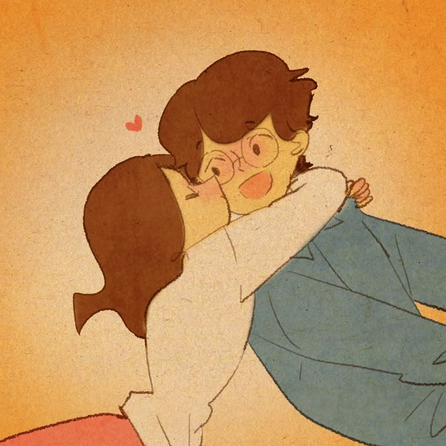
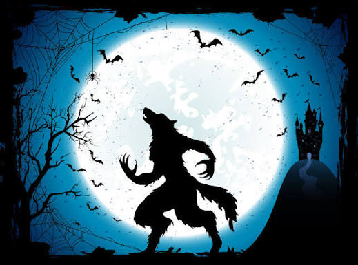

Mistério
Casos intrigantes, segredos e reviravoltas para ler sem conseguir parar.
Saiba maisHorizonte Literário
Cada livro é um novo horizonte.
Bem-vindo ao Horizonte Literário! Este blog reúne recomendações, resenhas e conteúdos sobre literatura de diferentes gêneros. Aqui você encontra sugestões para escolher a próxima leitura, conhecer histórias novas e revisitar clássicos que valem a pena.
Casos intrigantes, segredos e reviravoltas para ler sem conseguir parar.
Saiba mais
Histórias de amor, encontros e desencontros que emocionam.
Saiba mais
Mundos mágicos, criaturas e aventuras fora do comum.
Saiba mais